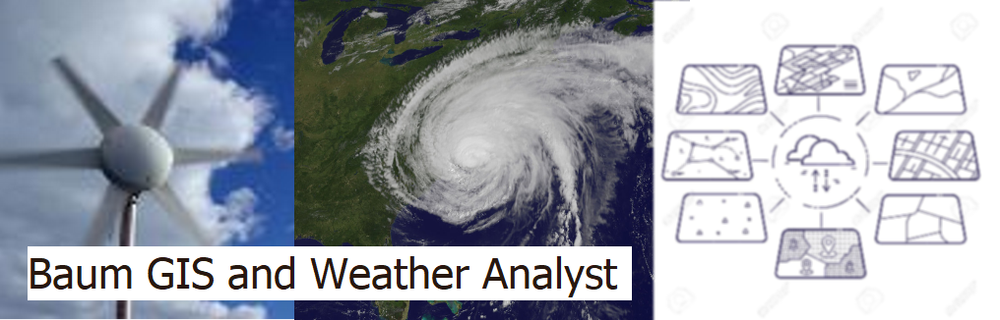

Test Satellite
Accueil
Fulcrum
Data
Environnement Canada - Modèle HRDPS (2,5km de résolution)
NWS - Modèle HRRR Model (3,0km de résolution)
Réseau de radar météorologique
GOES East Satellite Imagery